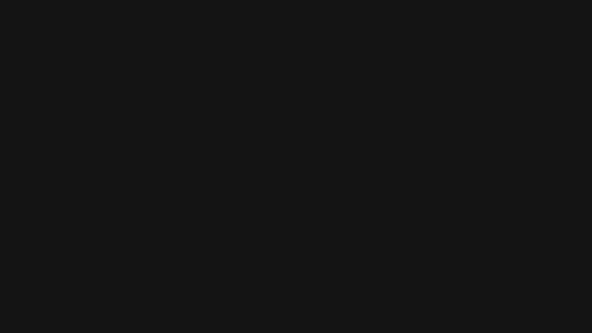

Sobre nosotros
Nos escuchas, nos ves...
En Radio Mas, nos apasiona compartir la mejor música y entretenimiento contigo. Desde los clásicos que nunca pasan de moda hasta los últimos éxitos, nuestra programación está diseñada para acompañarte en cada momento del día.

¡No te lo pierdas!
Programas recientes
Descubre lo mejor de nuestras recientes transmisiones aquí.
